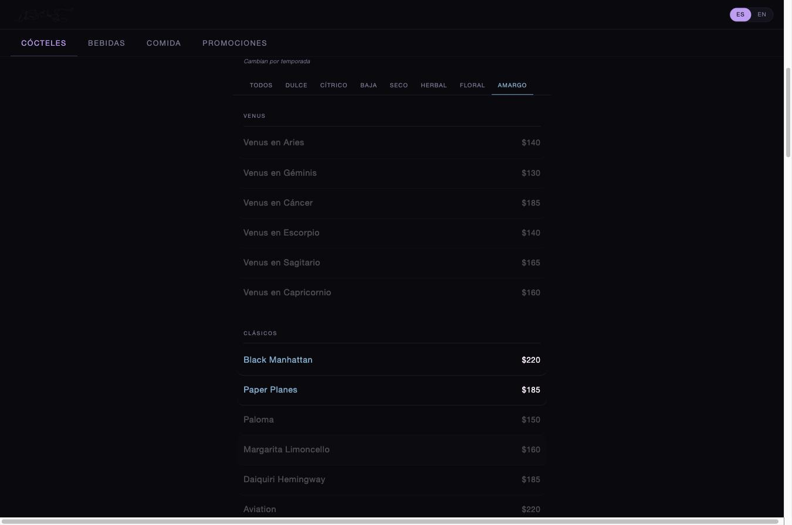
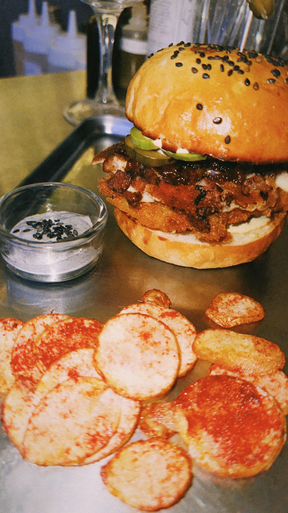
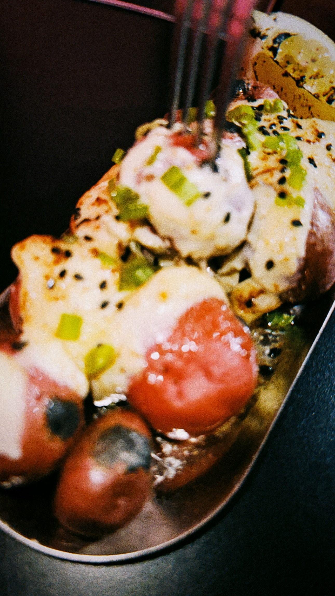
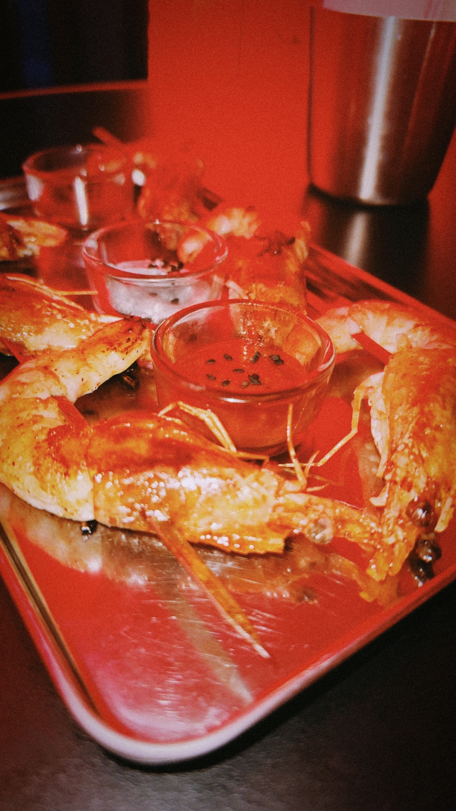

Venus needed a digital menu that could replace print without losing the bar's identity: a curated cocktail list built around zodiac-themed drinks (Venus en Aries, Venus en Escorpio), alongside beer, food and rotating promotions. I designed and built the menu as a responsive single-page site with a bilingual Spanish and English toggle, so the interface and every item description switch language instantly with no page reload.
The core feature is a flavor-profile filter system for the cocktail list. Guests can filter by taste profile (sweet, citrus, dry, herbal, floral, bitter, low ABV), and the interface highlights matching drinks in color while dimming the rest rather than hiding non-matching items entirely. This keeps the full menu visible and browsable while still guiding a guest toward a drink that matches what they are in the mood for, closer to a recommendation filter than a static list.
The build is vanilla HTML, CSS and JavaScript with no external framework: category tabs, an animated hand-drawn logo mark that recolors with the active flavor filter, and a full bilingual content layer driven by data attributes on each menu item. The logo animation itself came out of a GIF curation pass, sourcing and testing hand-drawn loop references to land on the right rhythm and line quality before rebuilding the mark natively for the header. The project applied UX pattern design (progressive filtering, non-destructive highlighting) to a real hospitality use case, and reinforced front-end skills in building interactive, framework-free interfaces light enough to run smoothly on a guest's phone over restaurant wifi.




